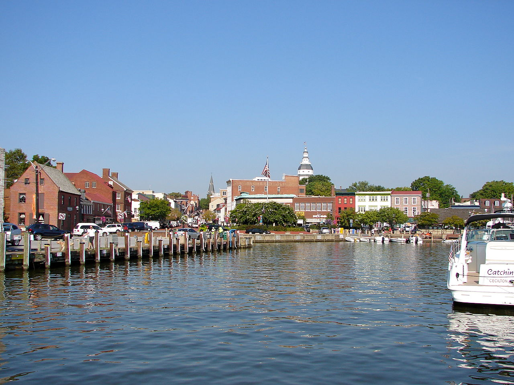

Volunteer
Annapolis
Help fight homelessness
Looking to get involved and make a difference in the Annapolis community? The Light House Homeless Prevention Support Center may be what you're looking for.
Contacts
- Kris McNally, Director of Volunteers
- Jenny Dell'Oro, Assistant Coordinator of Volunteers
From working in their kitchen and pantry to providing transportation to helping in their office, there's plenty to do. Plus, the organization is always looking for new volunteers, especially during the non-holiday season.
Their mission "is to help rebuild lives with compassion by providing shelter and services to prevent homelessness and empower people as they transition toward employment, housing and self-sufficiency."
If this sounds like something you'd be interested in, check out their website or contact them for more information.
 Save the Bay Day
Save the Bay Day

It's time for the annual "Save the Bay" day!
Sponsored by Comcast and Comcast Cares Day and The Volunteer Center, "Save the Bay" is a day to beautify and clean up the park. Activities range from planting flowers, ranking leaves, mulching, cleaning up the playground, painting, weeding, and much more.
The clean-up event is April 22, 2017 from 9am to noon. It's free to participate, and complimentary snacks, water, and a pizza lunch will be provided. If you want to go with the Explore group, sign up by April 17. The activity code for the form is "Save the Bay Day 2017."
Baltimore
Maryland Food Bank needs volunteers
The Maryland Food Bank needs volunteers A.S.A.P.
From the Maryland Food Bank: "Volunteers are the heart of the Maryland Food Bank. Whether sorting food, harvesting crops, or flash-freezing healthy meals from our Charles T. Bauer Community Kitchen, our volunteers directly impact how quickly and efficiently we are able to distribute food."
Volunteering is easy; just follow their step-by-step guide.
Use your tech skills for others
Techies for Good is a Meetup group that connects technology professionals with nonprofits who are in need of technological help. Volunteers can have a background in web design, web development, database development, infrastructure/tech support, social media, etc.
They host three kinds of events:
- Quick Fix Days/Sessions: Volunteers answer questions for nonprofits for a couple of hours.
- Tech Tutorials: Information sessions for nonprofits around common technologies/platforms.
- Give Back Hacks: One or two-day events that help nonprofits with development needs.
It's free to join the group, but you must create a Meetup account.
Washington, D.C.
Suited for Change
The nonprofit focuses on helping women prepare for entering the work environment.
Their mission: "Founded in 1992, Suited for Change empowers women by increasing their employment and job retention potential. We are the area's leading nonprofit for women in need of professional attire, mentoring, and job-readiness education. Through these services, we help women achieve financial independence. All Suited for Change services are available at no cost and by referral to local women in need.
Volunteers can work in the clothing boutique where the help patrons and maintain the shop and inventory areas, lead workshops, and assist in Saturday clothing donations.
Volunteer at the National Zoo
Love the National Zoo? Good news: they have volunteer opportunities!
According to the Washington Post, "Volunteer opportunities change often at the zoo and can include coveted jobs working directly with animal keepers or interpreter positions to engage the public in exhibits. An interest in science and animals is a must, and so is time. An interpreter job, for example, requires a commitment of three shifts a month for a year, and orientation is a seven-part process."